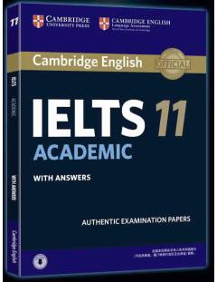

CIIELTS imtihoniga tayyorgarlik ko'rish uchun mo'ljallangan rasmiy amaliy testlar to'plami.
Ushbu kitob ingliz tilini bilish darajasini baholovchi IELTS imtihoniga tayyorgarlik ko'rish uchun mo'ljallangan rasmiy amaliy test materiallarini o'z ichiga oladi. Unda tinglash, o'qish, yozish va so'zlashuv ko'nikmalarini sinovdan o'tkazuvchi to'rtta to'liq test topshiriqlari va javoblar berilgan. Kitob talabalar va imtihon topshirishni rejalashtirayotgan nomzodlar uchun juda qo'l keladi.